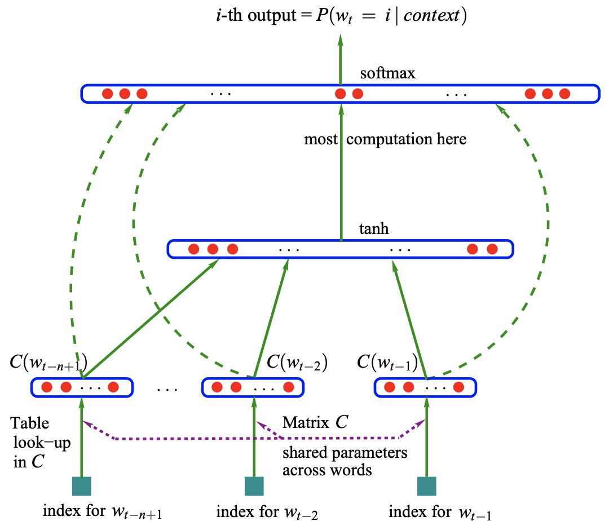

一. 概念
统计语言模型（language model，注*）是用于计算文本概率的模型，在语音识别、机器翻译等领域广泛应用。假设文本长度为$T$，由词$w_1, w_2, \ldots, w_T$依次组成，其联合概率被称为语言模型，如下：$$P(S) = P(w_1, w_2, \ldots, w_T)$$
由贝叶斯（Bayes）公式，此概率可被链式分解（chain rule）为：$$P(S) = P(w_1, w_2, \ldots, w_T) = \prod_{t=1}^T P(w_t \mid w_1, \ldots, w_{t-1})$$式中的条件概率$P(w_t \mid w_1, \ldots, w_{t-1})=\frac{P(w_1, \ldots, w_{t})}{P(w_1, \ldots, w_{t-1})}$，即为语言模型的参数。关于该参数的计算，常见的方法有：决策树、最大熵模型、n-gram模型、神经网络等方法。本文只讨论n-gram模型和神经网络两种方法。
注*：此外还有基于文法规则的，文法型语言模型，不作讨论。
二. N-gram模型
基本理论
考虑语言模型参数的近似计算，根据大数定理，当语料库足够大时，$$P(w_t \mid w_1, \ldots, w_{t-1}) \simeq \frac{\text{Count}(w_1, \ldots, w_{t})}{\text{Count}(w_1, \ldots, w_{t-1})}$$其中，$\text{Count}(w_1, \ldots, w_{t})$表示词串$w_1, w_2, \ldots, w_t$在语料中出现的次数。显然，当序列长度增加时，计算多个词共同出现的概率的复杂度会指数增加，即参数空间过大（$V^T$种可能性，$V$为词典大小）。
N-gram通过马尔可夫假设简化语言模型的计算：假设一个词的出现仅与该词前的$n-1$个词关联，而非前面的所有词（越近的词，越相关）。此时，观测到序列$w_1,\ldots,w_T$的概率$P(w_1,\ldots,w_T)$可被近似为:
$$P(w_1,\ldots,w_T) = \prod^T_{t=1} P(w_t\mid w_1,\ldots,w_{t-1})
\approx \prod^T_{t=1} P(w_t\mid w_{t-(n-1)},\ldots,w_{t-1})$$
理论上，$n$越大，依赖范围越大，模型效果越好（当$n$大到一定程度时，模型效果的提升幅度会变小）；模型参数量级却是$O(V^n)$（详见例子），$n$不能过大。权衡复杂度、准确性，通常取$n<4$，当$n$为1、2、3时，模型分别称作unigram、bigram、trigram。
平滑处理
在测试时，若出现了训练集（即，词典中）中未出现过的N-gram（Out of Vocabulary, OOV），其概率为0，并将导致语言模型输出概率为0。显然不合理，因此需赋予OOV N-gram非零概率，可以通过语言模型平滑来实现。
常见的平滑方法（详见[2][3]）有：折扣（分出非零N-gram一些概率质量，例如Laplace平滑、Good-Turing），回退（Backoff，根据N-1-gram计数，来建立N-gram模型），插值（Interpolation）等。
- Laplace平滑，也称加$\delta$平滑，其假设每个N-gram至少出现$\delta$次，即对每个N-gram，其计数为$\text{Count}+\delta$，所得概率如下：$$
P_{add}\left(w_{i} \mid w_{i-n+1}^{i-1}\right)=\frac{\delta+c\left(w_{i-n+1}^{i}\right)}{\delta|V|+\sum_{w_{i}} c\left(w_{i-n+1}^{i}\right)}
$$ - Good-Turing估计中，设实际出现$r$次的N-gram的类数为$n_r$，将$r$修正为：$r^{\star}=(r+1)\frac{n_{r+1}}{n_r}$。设$N = \sum_{r=1}^\infty r N_r$，则概率为：$$P(r) = \frac{r^{\star}}{N}$$此后，还需对seen N-grams的概率renormalize，详见例子。
细节处理
- 当$n>1$时，为使句首词的条件概率有意义，需给原序列加上起始符<s>。
- N-gram常以结束符</s>结尾（见例子），加上结束符，可使由词表中的N-gram组成的所有可能句子，概率和为1；若不加结束符，N-gram无法对任意长度的序列，进行概率分布建模。
N-gram的应用与局限性
N-gram的应用：
- 搜索引擎，搜索内容的补全；
- 输入法，输入拼音，对可能汉字的推测；
N-gram将词当做离散（discrete）的随机变量，造成了如下的局限性：
- 参数空间随$n$指数增长（$O(V^n)$），故$n$不能过大，无法建立过长的依赖（$n<4$）；
- 没有考虑词与词之间，内在的（语义层面的）相似性（similarity），无法泛化到类似的词。比如：即便训练集中“store open on Wednesday”出现多次，但只要“store open Tuesday”没有在训练数据中出现，那么其概率就很小；
- 离散随机变量对应到one-hot向量（维度为词典的大小），将面临着严重的维度灾难（The Curse of Dimensionality）：数据稀疏，测试数据难免会出现OOV问题。
三. 神经网络语言模型
神经网络语言模型（Neural Network Language Model，NNLM）在[7]中提出，通过神经网络来建模语言概率，计算条件概率$P(w_t \mid w_1, \ldots, w_{t-1})$。为降低计算复杂度，NNLM也利用了马尔可夫假设：$$P(w_t\mid w_1,\ldots,w_{t-1})
\approx P(w_t\mid w_{t-(n-1)},\ldots,w_{t-1})$$与N-gram不同的是，NNLM不通过计数对条件概率进行估计，而是通过神经网络对其建模求解。
模型结构
文章提出如下的神经网络语言模型：

网络分为三层：
- Projection layer：
- 输入为One-hot embedding，通常为$B\times N-1 \times V$的矩阵$W$，其中$B$为batch size，$V$为词典尺寸；
- $C$为embedding matrix（$V \times m$），其第$i$行$C(i)$代表i的word vector；
- 输出$x$为concatenation of word vectors：$
x=\left[C\left(w_{t-1}\right), C\left(w_{t-2}\right), \cdots, C\left(w_{t-n+1}\right)\right]。
$
- Hidden layer：为激活函数为$\text{tanh}$的全连接层（fully connected layer）：$$
y=b+W x+U \tanh (d+H x)
$$- 输入为$x$, 输出向量$y$的维度为$V$；
- 隐藏层权重$H$为$h \times (N-1)m$的矩阵，$U$为$V \times h$矩阵，$W$为$V \times (N-1)m$（optionally zero if no direct connections)；
- SoftMax layer：输出预测结果的概率分布（概率和为1）：$$
\hat{P}\left(w_{t} \mid w_{t-1}, \cdots w_{t-n+1}\right)=\frac{e^{y_{w_{t}}}}{\sum_{i} e^{y_{i}}}
$$
模型的训练基于极大似然估计，即优化模型参数使训练集的log-likelihood最大，等价于使用cross-entropy损失函数：$$
L=- \frac{1}{T} \sum_{t} \log \hat{P}\left(w_{t} \mid w_{t-1}, \cdots w_{t-n+1};\theta\right)+R(\theta)
$$其中，label的通常为$B\times 1$的矩阵，$\theta$为模型参数， $R(\theta)$为正则项。若使用批量梯度下降：
$$
\theta \leftarrow \theta-\varepsilon \frac{\frac{1}{B}\sum_{t}\partial \log \hat{P}\left(w_{t} \mid w_{t-1}, \cdots w_{t-n+1};\theta\right)}{\partial \theta}
$$
NNLM局限性
NNLM解决了N-gram的局限性：
- 参数空间较小，可以使用较大的$N$，例如文中$N = 6$；
- 相似词具有similar feature vector， 而且（NNLM建模的）概率函数是连续光滑函数，较小的特征变化只会导致较小的概率变化。因此，一个句子的出现将会增加所有相似句子的概率；
- 离散的词标签映射到低维连续的向量空间，且概率函数解决了词典范围内，未见过的N-gram造成的OOV问题；词向量矩阵$C$是NNLM副产物。
NNLM的局限性：
- 基于前馈神经网络（feed-forward neural network）的NNLM所处理$N$依旧有限且定长，基于循环神经网络（recurrent neural network）的模型应运而生；
- Softmax的计算复杂度为$O(V)$，计算量大，导致训练速度过慢。
四. 语言模型的评价标准
困惑度（Perplexity，PPL）通常被用于语言模型的评价指标，其基本思想为：测试集中是正常的句子，给测试集句子较高概率的语言模型较好。
这个概率$\hat{P}(s) = \hat{P}(w_1, w_2, \ldots, w_T) = \prod_{t=1}^T \hat{P}(w_t \mid w_1, \ldots, w_{t-1})$，可用WLL（per-word log-likelihood，即cross entropy loss）表示为：$$\text{WLL}(s) = -\frac{1}{T} \sum_{t=1}^T \log \hat{P}(w_{t} \mid w_1^{t-1})$$困惑度定义为$\text{Perplexity}(s) =2^{\text{WLL}(s)}$，公式为：$$\text{Perplexity}(S) = \frac{1}{|S|}\sum_{s \in S}\text{Perplexity}(s)\\\text{Perplexity}(s) = \hat{P}\left(w_{1}, w_{2}, w_{3}, \ldots, w_{T}\right)^{-1 / T} = (\prod_{t=1}^{T}\hat{P}(w_t \mid w_{1}^{t-1}))^{-1 / T} $$可以看出，模型越好，（交叉）熵（WWL）越小，困惑度越小。
注*，熵的基本知识：
- （信息）熵，根据信息的概率分布，对其编码所需的最短平均编码长度。信息量$log_2(P)$，表示使用二进制编码的位数：$$S = \sum_i P_ilog_2(P_i)$$可以看出，高频词用更少的位来编码，低频词则相反。
- 交叉熵，根据预测的信息的概率分布，进行编码，但实际概率分布下，所需的平均编码长度：
$$H(P, Q) = \sum_i Q_ilog_2(P_i)$$
五. Reference
[1]Github: 6.1. 语言模型
[2]Course: Michael Collins, Course notes for NLP, Chapter 1: language modelling
[3]知乎：N-gram 平滑
[4]Wiki：图灵估计
[5]Blog：N-gram语言模型 & Perplexity & 平滑
[6]Blog：李理-语言模型
[7]Paper：A Neural Probabilistic Language Model
[8]Zhihu：求通俗解释NLP里的perplexity是什么？@习翔宇